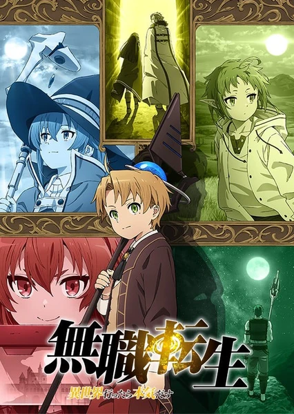

夏洛特
入坑神作！在拥有超能力的世界中，我拯救了世界，却忘了你……
Favorite Works
这里收集一些我想推荐的作品。点击封面可以查看详情，卡片内容则保留我自己的简短推荐理由。
入坑神作！在拥有超能力的世界中，我拯救了世界，却忘了你……

死肥宅转生到异世界就拿出真本事！成长启示神作。
搞笑日常番？最想成为的偶像男主！轻松又欢乐。
Game Top 3
这里用方框专栏收纳我最喜欢的游戏。
霓虹夜城、义体未来和强烈的沉浸感，最重要的是精神启示。
自由度、角色塑造和冒险感都很顶，像亲手写一部长篇奇幻番。
开放世界的快乐和城市故事感拉满，另一个世界的自由人生。